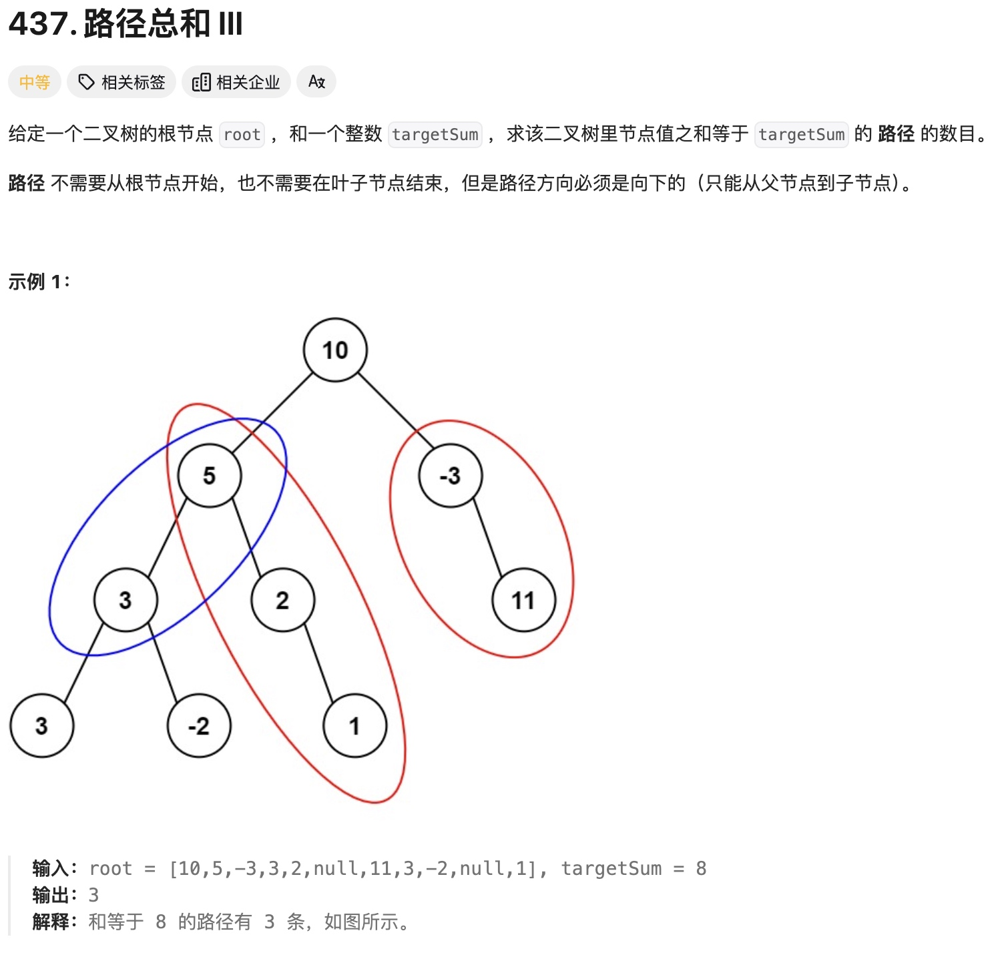
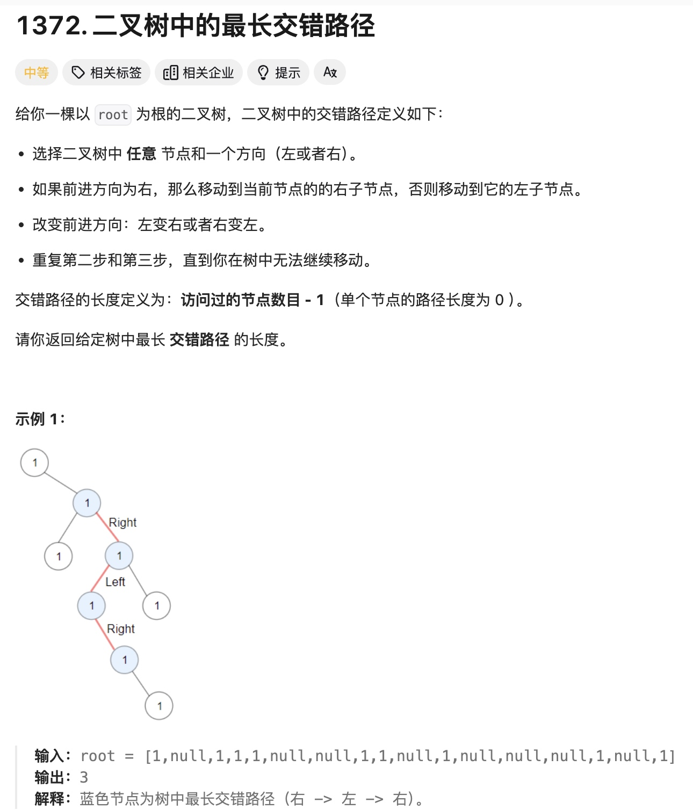

二叉树
链表是一个只有一个next指针的数据结构，而二叉树是有2个，left，right的数据结构。二叉树的性质有很多，完全二叉树，二叉搜索树。
其中最重要的就是要掌握二叉树的遍历，前中后序深度优先递归遍历DFS和广度优先BFS迭代遍历。
快速查看遍历顺序： 画点法，在每个节点的 前中后画点，从左边画线，看经过的路径顺序
关键点
- 在解题时，递归函数的返回值与如果操作返回值很关键，直接决定你能否得到正确答案。
- 双层递归（下面例子）
- 方向控制（下面有例子）
//前
func preorderTraversal(root: TreeNode?) {
guard let root = root else { return }
print(root.val)
preorderTraversal(root: root.left)
preorderTraversal(root: root.right)
}
preorderTraversal(root: treeNode3)
//中
func inorderTraversal(root: TreeNode?) {
guard let root = root else { return }
inorderTraversal(root: root.left)
print(root.val)
inorderTraversal(root: root.right)
}
inorderTraversal(root: treeNode3)
//hou
func postorderTraversal(root: TreeNode?) {
guard let root = root else { return }
postorderTraversal(root: root.left) //3 5 7
postorderTraversal(root: root.right)
print(root.val)
}
postorderTraversal(root: treeNode3)
//广度优先
//一层层的递进，每一次 while 都把这一层的 全走一遍
class Solution {
func maxDepth(_ root: TreeNode?) -> Int {
if root == nil {
return 0
}
var queue: [TreeNode?] = []
var deep: Int = 0
queue.append(root)
while !queue.isEmpty {
//这一步是关键，保证每次是循环当前层的节点 这样才能计算出多少层
//没有size> 0 的 while，其实也能遍历所有节点，但就无法计算多少层
var size = queue.count
while size > 0 {
var node = queue.first!
queue.removeFirst()
if node?.left != nil {
queue.append(node!.left)
}
if node?.right != nil {
queue.append(node!.right)
}
size -= 1
}
deep += 1
}
return deep
}
}

双层递归，从第一个节点开始递归遍历，然后从左，右，一直到最后
class Solution {
// var sum = 0
// var res = 0
func pathSum(_ root: TreeNode?, _ targetSum: Int) -> Int {
guard let root = root else { return 0 }
var res = preorderTraversal(root: root, targetSum)
res += pathSum(root.left, targetSum)
res += pathSum(root.right, targetSum)
return res
}
func preorderTraversal(root: TreeNode?, _ targetSum: Int) -> Int {
var res = 0
guard let root = root else {
return 0
}
if root.val == targetSum {
res = 1
}
res += preorderTraversal(root: root.left, targetSum - root.val)
res += preorderTraversal(root: root.right, targetSum - root.val)
return res
}
}

这道题我开始是想双层递归的，但超时。这道题的关键是 如果在遍历的时候，“控制”方向，题目要求交错，那如果同向，那就要重新开始计算了，如果反向，就+1.
class Solution {
var longestPath = 0
func longestZigZag(_ root: TreeNode?) -> Int {
guard let root = root else {
return 0
}
preorderTraversal(root.left, currentLongth: 1, isLeft: true)
preorderTraversal(root.right, currentLongth: 1, isLeft: false)
return longestPath - 1
}
func preorderTraversal(_ root: TreeNode?, currentLongth: Int, isLeft: Bool) {
guard let root = root else {
return
}
print(root.val)
var currentLongth = currentLongth
currentLongth += 1
longestPath = max(currentLongth, longestPath)
preorderTraversal(root.left, currentLongth: isLeft ? 1 : currentLongth, isLeft: true)
preorderTraversal(root.right, currentLongth: isLeft ? currentLongth : 1, isLeft: false)
}
}
二叉树迭代方式遍历
//前序 注意是先右在左
func inorderTraversal(root: TreeNode?) -> [Int] {
var result: [Int] = []
var stack: [TreeNode] = []
guard let root = root else { return result }
stack.append(root)
while !stack.isEmpty {
let node = stack.removeLast()
result.append(node.val)
if let left = node.right {
stack.append(left)
}
if let right = node.left {
stack.append(right)
}
}
return result
}
//后序
func postorderTraversal(root: TreeNode?) -> [Int] {
var result: [Int] = []
var stack: [TreeNode] = []
guard let root = root else { return result }
stack.append(root)
while !stack.isEmpty {
let node = stack.removeLast()
result.append(node.val)
if let right = node.left {
stack.append(right)
}
if let left = node.right {
stack.append(left)
}
}
//先序遍历是 中左右，在代码实现的时候 我们是先右入栈在左入栈，因为栈是先进后出
//我们改成 中 左 右，然后在将数组倒序
//后序是 左右中，
return result.reversed()
}
//中序
//有一说一 没太理解
//但可以先记为： 双while，内部while 一直向左边找，入栈
//到最深后 出栈，然后cur = cur.right
func inorderTraversal(_ root: TreeNode?) -> [Int] {
var result: [Int] = []
var stack: [TreeNode] = []
var cur: TreeNode? = root
while cur != nil || !stack.isEmpty {
while cur != nil {
stack.append(cur!)
cur = cur?.left
}
let node = stack.removeLast()
result.append(node.val)
cur = node.right
}
return result
}